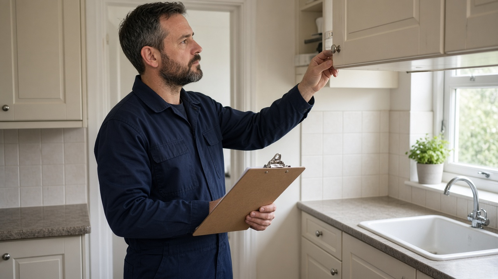
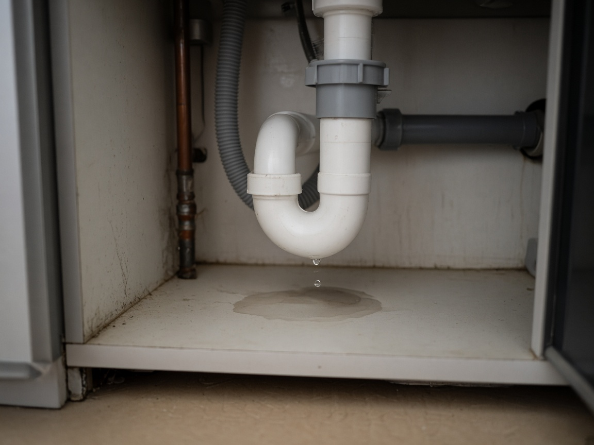

Property Maintenance
7 Property Maintenance Mistakes That Can Cost Landlords Thousands
Avoid costly rental property repairs. Discover seven common maintenance mistakes and practical ways to protect your investment in East London.

Owning a rental property is an investment, but maintaining that investment requires more than dealing with repairs when something breaks.
Small maintenance problems can become expensive when ignored.
A minor leak may eventually damage flooring or cabinets. A neglected roof problem can allow water into the property. A poorly maintained heating system can leave tenants without reliable heating when they need it most.
For landlords in Dagenham, Barking and across East London, a proactive approach to property maintenance can help reduce unexpected expenditure and keep tenants comfortable.
Here are seven common maintenance mistakes that landlords should avoid.
1. Ignoring Small Plumbing Problems
A dripping tap or small leak beneath a sink might not seem urgent.
However, even minor plumbing problems can become more serious if left unresolved.
Water can gradually damage cupboards, flooring and surrounding materials.
Hidden leaks may also contribute to damp and mould.
Common warning signs include:
- Unexplained damp patches.
- Stains on walls or ceilings.
- Water collecting beneath sinks.
- Persistent dripping.
- Unusual changes in water pressure.
- Musty smells near plumbing fixtures.
What landlords should do: Encourage tenants to report leaks promptly and arrange appropriate investigation and repairs.
Don't assume a small leak will remain small.
Where water damage is suspected, check whether neighbouring rooms or properties may also be affected.
2. Delaying Heating and Boiler Maintenance
Heating and hot water are essential to a comfortable rental home.
Problems can become particularly disruptive during colder months.
A heating system that repeatedly loses pressure, makes unusual noises or fails to warm rooms properly may need professional attention.
Ignoring early warning signs can increase the risk of breakdowns.
Landlords should ensure that heating systems are maintained appropriately and that required safety checks are completed.
Gas appliances and flues covered by landlord gas safety duties must undergo annual checks by a Gas Safe registered engineer.
Gas-related repairs must be undertaken by appropriately qualified professionals.
What landlords should do: Keep relevant servicing and safety records organised, respond promptly to heating complaints and arrange repairs before minor faults become major disruptions.
It's also sensible to establish a clear procedure for tenants to report heating emergencies.

3. Overlooking Roofs, Gutters and External Drainage
Some property problems begin outside the building.
Blocked gutters, damaged roof tiles and poorly maintained drainage can allow water to reach areas where it shouldn't.
Over time, this may contribute to damp patches, damaged ceilings, deteriorating external surfaces or more serious structural problems.
These issues are not always visible from inside the property.
That's why exterior maintenance deserves attention.
Landlords should look out for:
- Overflowing gutters.
- Damaged or missing roof tiles.
- Blocked external drains.
- Cracks around vulnerable areas.
- Signs of water entering the building.
What landlords should do: Arrange appropriate exterior inspections and maintenance, particularly after severe weather.
Roof work and other tasks involving height should be left to suitably qualified contractors.
Preventative maintenance is often easier to manage than extensive water damage.
4. Treating Damp and Mould as a Cosmetic Problem
Damp and mould should never be dismissed as simply an appearance issue.
They can affect the condition of a property and pose risks to occupants' health.
Damp can have several causes, including leaks, inadequate insulation, building defects, poor ventilation and condensation.
Sometimes more than one factor contributes to the problem.
Cleaning visible mould without addressing the underlying cause may only provide a temporary solution.
Landlords should investigate reports of damp and mould promptly, assess potential health risks and arrange appropriate remedial work.
It is important not to assume the tenant is responsible without examining the property's condition and the possible causes.
What landlords should do: Identify the source of moisture, obtain professional advice where necessary and carry out suitable repairs.
Check that the affected areas are properly addressed rather than relying on repeated surface cleaning.
The government's guidance on damp and mould provides useful information for landlords and managing agents.
5. Choosing Temporary Fixes Instead of Proper Repairs
When an unexpected maintenance problem occurs, the cheapest immediate solution can be tempting.
However, repeatedly repairing the same fault without addressing its cause may create unnecessary costs.
For example, replacing damaged plaster without fixing the water penetration behind it is unlikely to resolve the problem permanently.
Similarly, repeatedly resetting a faulty heating system is not a substitute for identifying the underlying issue.
Not every problem requires a major replacement.
Sometimes a straightforward repair is entirely appropriate.
The important thing is to understand what has caused the fault and select a suitable long-term solution.
What landlords should do: Use suitably qualified tradespeople, request clear explanations of the proposed work and retain invoices and reports.
For more expensive repairs, obtaining more than one quotation may help you assess the available options, provided the delay does not create a safety risk.
6. Skipping Property Inspections
A rental property may appear to be running smoothly even when maintenance problems are developing.
Reasonable, properly arranged inspections can help identify issues that tenants may not have noticed or reported.
These might include deteriorating sealant, small leaks, defective fittings or signs of excessive moisture.
Inspections also provide an opportunity to assess the property's general condition and identify work that may be needed.
However, tenants have the right to enjoy their home without unreasonable interference.
Routine access should be arranged lawfully, with the required notice and at reasonable times.
In England, landlords must generally provide at least 24 hours' notice for inspection or repair access, except where emergency access is justified.
What landlords should do: Agree a sensible inspection arrangement with tenants and focus on the property's condition rather than unnecessary intrusion.
Keep clear notes of any maintenance issues identified and follow up on required work.
There is no single inspection frequency suitable for every property.
The appropriate arrangement depends on the tenancy, property condition and any relevant licensing requirements.
7. Failing to Keep Maintenance Records
Poor record-keeping is an easily overlooked property management problem.
Without proper documentation, it can be difficult to establish when a fault was reported, what work was completed or which contractor attended.
Missing records can also create complications when discussing recurring problems or reviewing maintenance expenditure.
A straightforward maintenance log can make property management much easier.
Useful information to record includes:
- Date the problem was reported.
- Description of the issue.
- Relevant photographs, where appropriate.
- Date of inspection.
- Contractor details.
- Work completed.
- Cost of repairs.
- Any further action required.
Records can also help landlords identify repeated faults.
For example, if the same plumbing issue has been repaired several times, it may be worth investigating whether a more permanent solution is needed.
What landlords should do: Keep maintenance information organised and accessible, while handling tenant information appropriately.
Review recurring repair costs to identify where preventative work may be worthwhile.
A Simple Maintenance Routine for Landlords
You don't need a complicated system to manage property maintenance more effectively.
A practical routine can make a significant difference.
Before a Tenant Moves In
Check the property's overall condition, complete necessary repairs and ensure required safety documentation is in place.
During the Tenancy
Encourage early reporting of problems, respond appropriately and arrange reasonable inspections when required.
At Suitable Intervals
Review the condition of heating, plumbing, electrical installations, external areas and other components, using qualified professionals where necessary.
After Repairs
Confirm that the issue has been resolved and retain the relevant paperwork.
The aim is to identify problems early and deal with them before they become more disruptive or expensive.
Final Thoughts
Property maintenance is one of the most important responsibilities of a landlord.
Delaying necessary repairs may seem like a way to reduce immediate expenditure, but unresolved issues can lead to larger repair bills, tenant dissatisfaction and avoidable complications.
A proactive approach helps protect the condition of the property while providing tenants with a safer, more comfortable home.
For landlords with busy schedules or several rental properties, keeping track of maintenance tasks can become challenging.
Having a clear management process, whether handled personally or through a professional agent, can make those responsibilities easier to organise.
Looking for Property Management Support?
If you're a landlord in Dagenham, Barking or the surrounding East London area, Safin Properties UK can discuss your property management needs.
Explore maintenance support, or contact Safin Properties to find out more.
Official references: GOV.UK: Making repairs and GOV.UK: Damp and mould guidance.